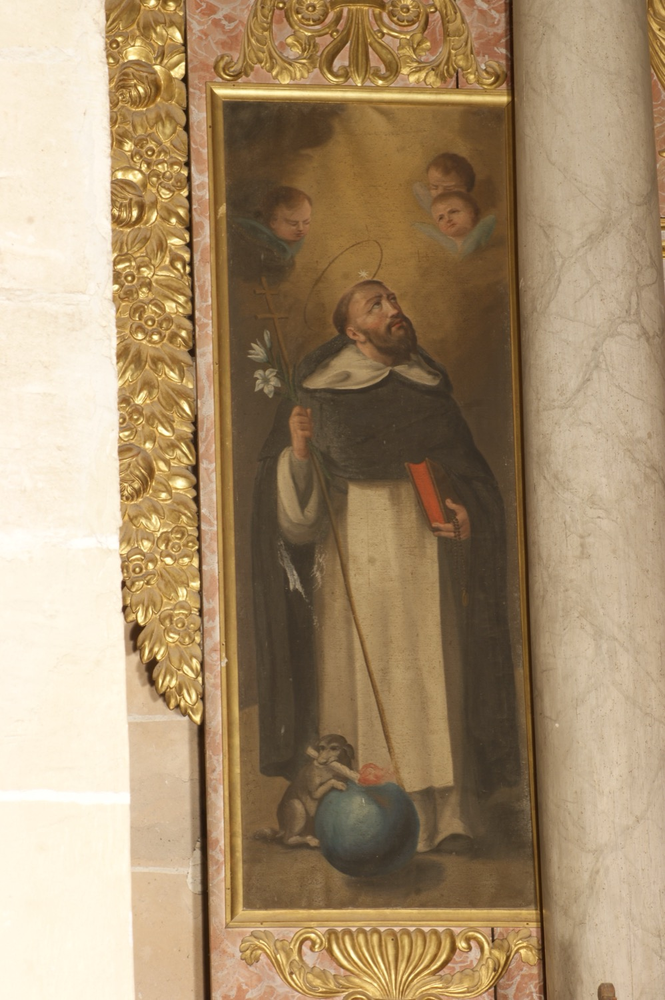

Sant Domènec de Guzman (1170-1221) va ser el fundador de l’Orde dels Frares Predicadors, també coneguts com a dominics. Amb fama de gran predicador, el papa l’envià a combatre l’heretgia albigesa. Per convèncer els albigesos, combinà la predicació amb l’adopció d’una vida de pobresa que l’acostàs al seu mode de vida auster. Segons la llegenda, va posar per escrit en un llibre els seus arguments contra els heretges i els demostrà que eren correctes llançant el llibre al foc i comprovant que no es cremava. Després de la croada contra els albigesos, fundà l’Orde dels dominics, dedicada a predicar contra les heretgies. La seva fama de miracler va fer que aquest orde cresqués molt ràpidament.
En aquesta pintura, sant Domènec vesteix l’hàbit dels dominics, blanc amb capa negra. Amb la mà dreta subjecta un lliri blanc, símbol de castedat, i un bastó coronat per una doble creu: es tracta de la creu patriarcal que l’identifica com a patriarca d’una gran orde religiosa. Amb la mà esquerra sosté un llibre i un rosari. El llibre simbolitza la seva missió predicadora i també recorda el dels seus arguments contra els heretges que no es cremà quan el posaren al foc. Pel que fa al rosari, és objecte d’una especial devoció entre els dominics. Segons la tradició, la Verge Maria aparegué a sant Domènec mentre pregava per obtenir la conversió dels albigesos i li entregà un rosari com a eina de predicació; arran d’aquesta tradició, els dominics contribuïren decisivament a estendre el rés del rosari a tota l’Eglésia Catòlica.
El sant té una estrella damunt del cap que simbolitza la llum de la veritat i fa referència a la llegenda segons la qual, durant el seu baptisme, la seva padrina de fonts va veure una estrella brillant sobre el seu front; això s’interpretà com un senyal que el nadó estava destinat a treure el món de les tenebres mitjançant la predicació. Al costat del sant hi ha un ca amb una torxa encesa a la boca i recolzat sobre un globus terraqüi. Aquesta figura fa referència a un somni que tengué la seva mare mentre estava embarassada d’ell, en què veié sortir del seu ventre un ca com aquest. La mare acudí a sant Domènec de Silos perquè li interpretàs el somni, i aquest li anuncià que el fill que esperava encendria el foc de Jesús per tot el món mitjançant la predicació. Precisament, segons la tradició, va ser en honor de sant Domènec de Silos que posaren aquest nom al nin.